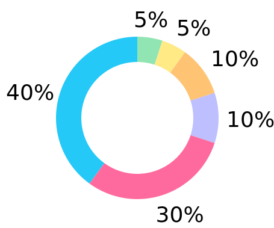

Just a simple girl trying to find the fun and beauty in life's complexities.
My knack for problem solving led me to the world of front end development, starting my transition from a graphic designer to a UI/UX designer. By combining my knowledge of Biology and Psychology with my visual talents, I come up with concepts that will help users overcome their fears of technology. Currently, I am the lead designer at Controlco where I've sparked the company's interest to focus on delivering better looking and user-friendlier services.
While I do love UI/UX work, I also spend a lot of my time dabbling in side projects like making icon sets and logos. But when I'm not doing anything creative, you can find me napping with my cats.
Pie Chart of Hobbies



Speaking of traveling, I tend to document a lot of my travels with photos and footages. Sometimes, I might even create a montage for fun. Here's one I made using some clips from my incredible (and deilcious) experience in Japan during 2016.